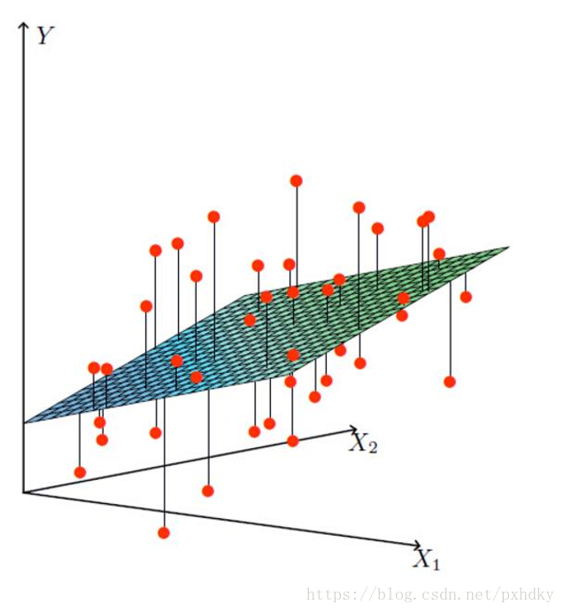
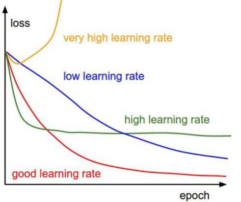

线性回归模型的推导
线性回归（Linear Regression）是一种通过属性的线性组合来进行预测的线性模型，其目的是找到一条直线或者一个平面或者更高维的超平面，使得预测值与真实值之间的误差最小化。
- 特点：只有一个自变量的情况称为单变量回归，大于一个自变量情况的叫做多元回归.
- 优点：结果具有很好的可解释性（w直观表达了各属性在预测中的重要性），计算熵不复杂。
- 缺点：对非线性数据拟合不好
- 适用数据类型：数值型和标称型数据

线性回归的模型：
h(x)=θ1x1+θ2x2+θ3x3+θ4x4+...+θnxn+b
那么我们可以通过向量的方式来表示就值θ与特征X值之间的关系：
Θ=(θnθ1);X=(xnx1)
将模型整合后：
h(x)=i=0∑nθixi=ΘTX
线性回归模型有很好的可解释性，可以从权重θ直接看出每个特征对结果的影响程度。
误差
真实值和预测值之间肯定是要存在差异的（用 b 来表示该误差）,误差具有如下特点：
对于每个样本会有
y(i)=θTx(i)+b(i)
由于误差服从于高斯分布
p(b(i))=2πσ1exp(−2σ2(b(i))2)
将（3）公式带入（4）公式
p(y(i)∣x(i);θ)=2πσ1exp(−2σ2(y(i)−θTx(i))2)
为了根据样本估计参数值，我们引入似然函数
L(θ)=i=1∏mp(y(i)∣x(i);θ)=i=1∏m2πσ1exp(−2σ2(y(i)−θTx(i))2)
为了简化计算复杂度，我们使用对数似然，将乘法转换成加法。
logL(θ)=logi=1∏m2πσ1exp(−2σ2(y(i)−θTx(i))2)
将上面的公式化简：
logL(θ)=i=1∑m2πσ1exp(−2σ2(y(i)−θTx(i))2)
继续展开：
logL(θ)=mlog2πσ1−σ21∗21i=1∑m(y(i)−θTx(i))2
目标：让似然函数（对数变换后也一样）越大越好
看公式（9）我们能看出减号前后都是恒正的数字。
因此我们推出我们的目标函数，越小越好
J(θ)=21i=1∑m(y(i)−θTx(i))2
上述公式，被称为最小二乘法
求解
要使 J(θ) 误差最小，可以采用一下两种方法：一种使正规方程解法（只适用于简单的线性回归），另一种使用梯度下降算法。
正规方程
目标函数转换
J(θ)=21i=1∑m(hθ(x(i))−y(i))2=21(Xθ−y)T(Xθ−y)
求偏导
▽θJ(θ)=▽θ[21(Xθ−y)T(Xθ−y)]=▽θ[21(θTXTXθ−θTXTy−yTXθ+yTy)]=21(2XTXθ−XTy−(yTX)T)=XTXθ−XTy
偏导设为0
将偏导设置为0 求出 θ的值
θ=(XTX)−1XTy
X为特征值矩阵，y为目标值矩阵。
缺点：当特征过于复杂，求解速度太慢，对于复杂的算法，不能使用正规方程求解
梯度下降
损失函数(又称代价函数或成本函数)：
J(θ)=21i=1∑m(y(i)−θTx(i))2
梯度下降是一个用来求函数最小值的算法，将使用梯度下降算法来求出损失函数J(θ)的最小值。
梯度下降思想：开始时我们随机选择一个参数的组合，计算损失函数，然后我们寻找下一个能让损失函数值下降最多的参数组合。我们持续这么做直到找到一个局部最小值（local minimum），因为我们并没有尝试完所有的参数组合，所以不能确定我们得到的局部最小值是否便是全局最小值（global minimum），选择不同的初始参数组合，可能会找到不同的局部最小值。
梯度下降(Gradient Descent)，原始的梯度下降法需要计算所有样本的值才能够得出梯度，计算量大，所以后面才有会一系列的改进。
批量梯度下降（BGD）
特点：容易得到最优解，但是由于考虑到所有成本，计算太慢。
算法的公式为：
θj:=θj−α∂θj∂J(θ)∂θj∂J(θ)=m1i=1∑m(yi−hθ(xi))xjiθj:=θj+m1i=1∑m(yi−hθ(xi))xji
其中alpha是学习率（learning rate），它决定了我们沿着能让代价函数下降程度最大的方向向下迈出的步子有多大，在批量梯度下降中，我们每一次都同时让所有的参数减去学习速率乘以代价函数的导数。

随机梯度下降(SGD)
特点：迭代速度快，但不一定每次都朝着收敛的方向。
公式：
θj:=θj+(yi−hθ(xi))xji
小批量梯度下降(Mini-batch GD)
特点：每次更新选择一小部分数据来算，实用！
公式：
θj:=θj+101i=1∑10(yi−hθ(xi))xji